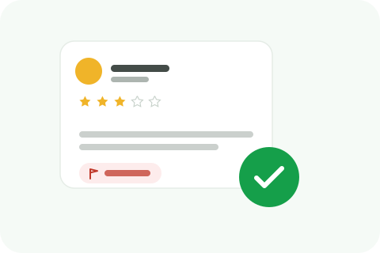

"Found a bug in my salad" or "got food poisoning here" is about the most damaging claim a restaurant can face, since it attacks the one thing customers absolutely need to trust before walking in the door. When that claim is false, it's worth understanding exactly what makes it removable, and what doesn't.

A false food-safety or health-violation claim is, at its legal core, still a defamation case, a false statement of fact presented as true, causing real reputational harm. What distinguishes it from general defamation is the specificity of the claim and the availability of hard, checkable evidence, health inspection records, which makes some of these cases unusually easy to disprove definitively.
Pull your actual, current health inspection record and compare it directly against what the review claims, a clean recent inspection report is some of the strongest evidence available for disproving a specific violation allegation. Combine this with your own transaction records to establish whether the reviewer was even a genuine customer on the date claimed.
A reviewer's honest account of being dissatisfied with food quality, temperature, or presentation isn't a health-violation claim and isn't removable just because the dining industry is reputation-sensitive. The same honest standard applies here as everywhere else: a harsh but accurate complaint about quality doesn't become a removable health claim just because you'd prefer it gone.
A false food-safety claim carries unusually high stakes for a platform too, since it directly influences a decision with real health consequences for other users if left unaddressed and genuinely false. This generally means these reports, when well-documented, get real attention rather than getting lost among the volume of more routine review disputes.
If a false claim specifically alleges a health code violation, and your actual inspection history contradicts it clearly, it may be worth notifying your local health department proactively, particularly if the claim is gaining traction or being repeated. A clean inspection record on file with the actual regulatory authority is independent corroborating evidence beyond whatever you present to the review platform itself.
A false food-safety claim that visibly affects bookings or foot traffic is worth tracking financially, since that documentation matters if the situation escalates toward a legal consultation, which this specific category of defamation claim sometimes genuinely warrants given the severity and provability involved.
A customer who saw the false review before visiting may ask staff about it directly, and an inconsistent or defensive answer from an unprepared employee can do more damage than the original review itself. Give your team a brief, calm, factual line to use, acknowledging the review exists, affirming your actual clean inspection record, without getting drawn into a public argument about it at the counter.
We build the evidence-based case and file it correctly, with inspection records in hand.